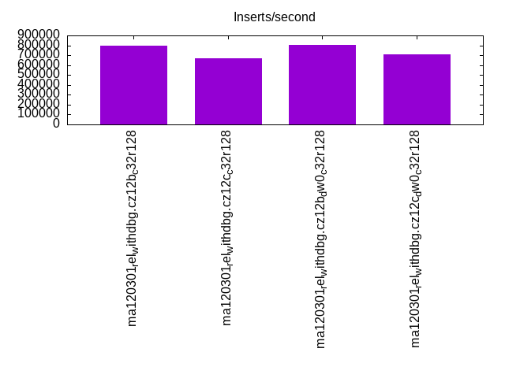
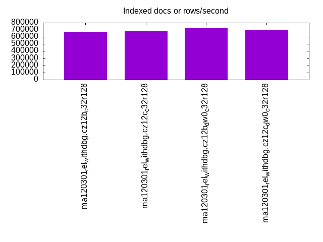
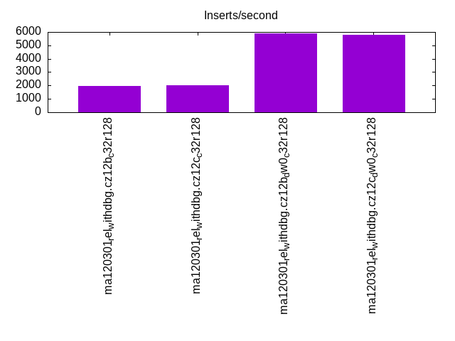
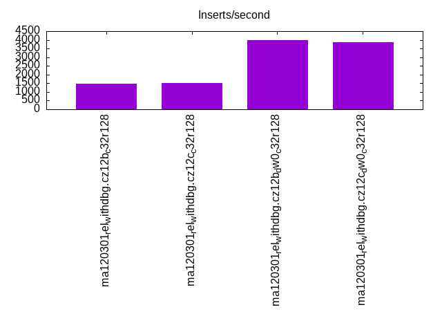
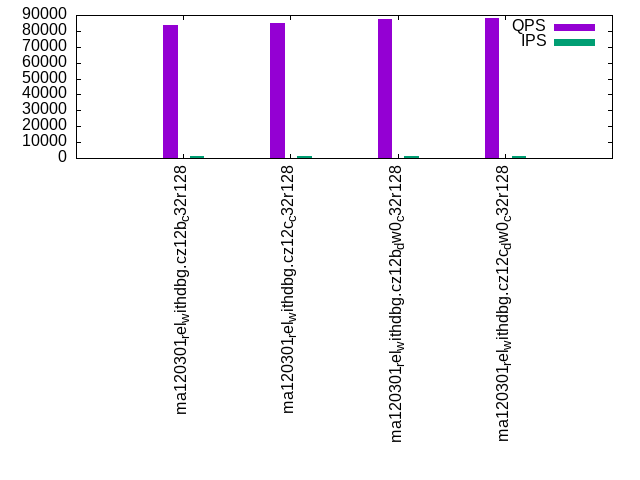
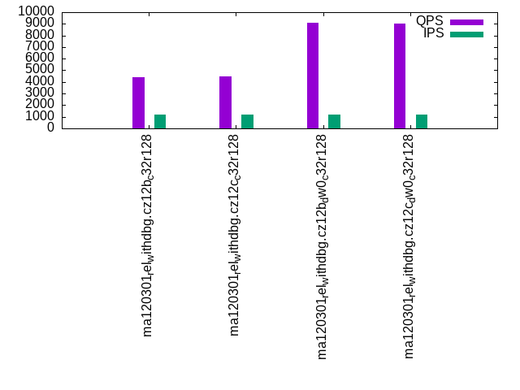
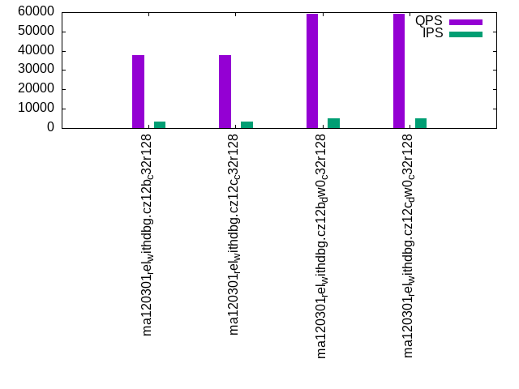
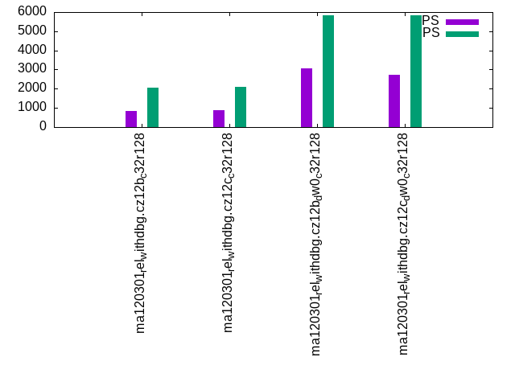
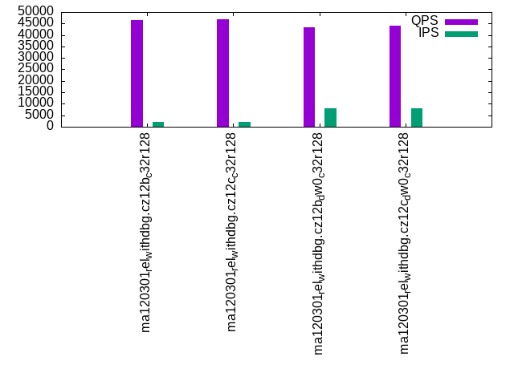
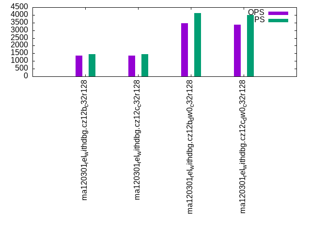

This is a report for the insert benchmark with 3600M docs and 12 client(s). It is generated by scripts (bash, awk, sed) and Tufte might not be impressed. An overview of the insert benchmark is here and a short update is here. Below, by DBMS, I mean DBMS+version.config. An example is my8020.c10b40 where my means MySQL, 8020 is version 8.0.20 and c10b40 is the name for the configuration file.
The test server has 32 cores, 128G RAM and 1 NVMe device. The benchmark was run with 12 clients and there were 1 or 3 connections per client (1 for queries or inserts without rate limits, 1+1 for rate limited inserts+deletes). It uses 8 tables with a table per client. It loads 300M rows per table without secondary indexes, creates 3 secondary indexes per table, then inserts 4m+1m rows per table with a delete per insert to avoid growing the table. It then does 6 read+write tests for 1800s each that do queries as fast as possible with 100,100,500,500,1000,1000 inserts/s and the same for deletes/s per client concurrent with the queries. The database is larger than RAM and most tests are IO-bound except for the range query (qr*) tests that frequently have a cached working set. Clients and the DBMS share one server.
The tested DBMS are:
The numbers are inserts/s for l.i0, l.i1 and l.i2, indexed docs (or rows) /s for l.x and queries/s for qr100, qp100 thru qr1000, qp1000" The values are the average rate over the entire test for inserts (IPS) and queries (QPS). The range of values for IPS and QPS is split into 3 parts: bottom 25%, middle 50%, top 25%. Values in the bottom 25% have a red background, values in the top 25% have a green background and values in the middle have no color. A gray background is used for values that can be ignored because the DBMS did not sustain the target insert rate. Red backgrounds are not used when the minimum value is within 80% of the max value.
| dbms | l.i0 | l.x | l.i1 | l.i2 | qr100 | qp100 | qr500 | qp500 | qr1000 | qp1000 |
|---|---|---|---|---|---|---|---|---|---|---|
| ma120301_rel_withdbg.cz12b_c32r128 | 799467 | 671642 | 1982 | 1484 | 83703 | 4438 | 37823 | 845 | 46389 | 1342 |
| ma120301_rel_withdbg.cz12c_c32r128 | 670017 | 679373 | 2008 | 1522 | 84853 | 4441 | 37821 | 887 | 46894 | 1366 |
| ma120301_rel_withdbg.cz12b_dw0_c32r128 | 803392 | 721443 | 5893 | 4001 | 87204 | 9080 | 59249 | 3060 | 43374 | 3460 |
| ma120301_rel_withdbg.cz12c_dw0_c32r128 | 706298 | 694310 | 5797 | 3844 | 88150 | 8991 | 59008 | 2731 | 44194 | 3360 |
This table has relative throughput, throughput for the DBMS relative to the DBMS in the first line, using the absolute throughput from the previous table. Values less than 0.95 have a yellow background. Values greater than 1.05 have a blue background.
| dbms | l.i0 | l.x | l.i1 | l.i2 | qr100 | qp100 | qr500 | qp500 | qr1000 | qp1000 |
|---|---|---|---|---|---|---|---|---|---|---|
| ma120301_rel_withdbg.cz12b_c32r128 | 1.00 | 1.00 | 1.00 | 1.00 | 1.00 | 1.00 | 1.00 | 1.00 | 1.00 | 1.00 |
| ma120301_rel_withdbg.cz12c_c32r128 | 0.84 | 1.01 | 1.01 | 1.03 | 1.01 | 1.00 | 1.00 | 1.05 | 1.01 | 1.02 |
| ma120301_rel_withdbg.cz12b_dw0_c32r128 | 1.00 | 1.07 | 2.97 | 2.70 | 1.04 | 2.05 | 1.57 | 3.62 | 0.94 | 2.58 |
| ma120301_rel_withdbg.cz12c_dw0_c32r128 | 0.88 | 1.03 | 2.92 | 2.59 | 1.05 | 2.03 | 1.56 | 3.23 | 0.95 | 2.50 |
This lists the average rate of inserts/s for the tests that do inserts concurrent with queries. For such tests the query rate is listed in the table above. The read+write tests are setup so that the insert rate should match the target rate every second. Cells that are not at least 95% of the target have a red background to indicate a failure to satisfy the target.
| dbms | qr100.L1 | qp100.L2 | qr500.L3 | qp500.L4 | qr1000.L5 | qp1000.L6 |
|---|---|---|---|---|---|---|
| ma120301_rel_withdbg.cz12b_c32r128 | 1193 | 1191 | 3190 | 2049 | 1978 | 1437 |
| ma120301_rel_withdbg.cz12c_c32r128 | 1192 | 1191 | 3246 | 2080 | 2022 | 1463 |
| ma120301_rel_withdbg.cz12b_dw0_c32r128 | 1193 | 1193 | 5073 | 5813 | 7900 | 4134 |
| ma120301_rel_withdbg.cz12c_dw0_c32r128 | 1192 | 1192 | 4991 | 5819 | 8045 | 4012 |
| target | 1200 | 1200 | 6000 | 6000 | 12000 | 12000 |
l.i0: load without secondary indexes. Graphs for performance per 1-second interval are here.
Average throughput:

Insert response time histogram: each cell has the percentage of responses that take <= the time in the header and max is the max response time in seconds. For the max column values in the top 25% of the range have a red background and in the bottom 25% of the range have a green background. The red background is not used when the min value is within 80% of the max value.
| dbms | 256us | 1ms | 4ms | 16ms | 64ms | 256ms | 1s | 4s | 16s | gt | max |
|---|---|---|---|---|---|---|---|---|---|---|---|
| ma120301_rel_withdbg.cz12b_c32r128 | 76.222 | 23.503 | 0.083 | 0.092 | 0.072 | 0.019 | 0.008 | nonzero | 5.010 | ||
| ma120301_rel_withdbg.cz12c_c32r128 | 54.122 | 45.567 | 0.088 | 0.093 | 0.063 | 0.053 | 0.014 | nonzero | 8.187 | ||
| ma120301_rel_withdbg.cz12b_dw0_c32r128 | 72.713 | 27.070 | 0.068 | 0.049 | 0.076 | 0.016 | 0.008 | nonzero | 5.913 | ||
| ma120301_rel_withdbg.cz12c_dw0_c32r128 | 53.176 | 46.614 | 0.080 | 0.032 | 0.040 | 0.046 | 0.013 | nonzero | 6.729 |
Performance metrics for the DBMS listed above. Some are normalized by throughput, others are not. Legend for results is here.
ips qps rps rmbps wps wmbps rpq rkbpq wpi wkbpi csps cpups cspq cpupq dbgb1 dbgb2 rss maxop p50 p99 tag 799467 0 2 0.0 4133.3 204.1 0.000 0.000 0.005 0.261 180689 37.8 0.226 15 236.8 337.6 101.2 5.010 69391 0 ma120301_rel_withdbg.cz12b_c32r128 670017 0 1 0.0 4360.3 248.4 0.000 0.000 0.007 0.380 208126 34.7 0.311 17 236.8 338.1 101.4 8.187 60392 0 ma120301_rel_withdbg.cz12c_c32r128 803392 0 2 0.0 4108.7 204.2 0.000 0.000 0.005 0.260 183965 38.3 0.229 15 236.8 337.6 101.3 5.913 66792 0 ma120301_rel_withdbg.cz12b_dw0_c32r128 706298 0 1 0.0 4568.6 261.4 0.000 0.000 0.006 0.379 214290 36.3 0.303 16 236.8 338.2 101.4 6.729 65692 0 ma120301_rel_withdbg.cz12c_dw0_c32r128
Average values from iostat.
r/s rkB/s rrqm/s %rrqm r_await rareq-s w/s wkB/s wrqm/s %wrqm w_await wareq-s d/s dkB/s drqm/s %drqm d_await dareq-s f/s f_await aqu-sz %util 1.460 9.961 0.000 0.000 37.47 4.899 4133.3 209025 162.7 3.994 78.13 54.65 2.794 50.94 0.000 0.000 12.52 22.00 67.55 5.964 211.2 42.81 ma120301_rel_withdbg.cz12b_c32r128 1.183 8.333 0.000 0.000 15.61 4.633 4360.3 254356 133.9 3.032 82.03 60.39 1.286 66.58 0.000 0.000 17.29 54.08 49.47 14.50 197.6 53.39 ma120301_rel_withdbg.cz12c_c32r128 1.500 10.17 0.000 0.000 31.10 4.854 4108.7 209057 152.2 3.758 70.85 55.17 3.579 163.5 0.000 0.000 11.10 45.04 55.44 6.659 198.3 42.90 ma120301_rel_withdbg.cz12b_dw0_c32r128 1.312 9.108 0.000 0.000 20.03 4.923 4568.6 267674 127.0 2.622 89.22 61.99 1.336 22.41 0.000 0.000 25.28 15.22 37.72 21.23 214.0 55.97 ma120301_rel_withdbg.cz12c_dw0_c32r128
l.x: create secondary indexes.
Average throughput:

Performance metrics for the DBMS listed above. Some are normalized by throughput, others are not. Legend for results is here.
ips qps rps rmbps wps wmbps rpq rkbpq wpi wkbpi csps cpups cspq cpupq dbgb1 dbgb2 rss maxop p50 p99 tag 671642 0 7515 622.1 8357.5 697.4 0.011 0.949 0.012 1.063 30509 16.7 0.045 8 501.7 602.5 101.5 0.001 NA NA ma120301_rel_withdbg.cz12b_c32r128 679373 0 7629 633.5 8111.7 700.0 0.011 0.955 0.012 1.055 28847 16.5 0.042 8 501.7 603.0 101.6 0.004 NA NA ma120301_rel_withdbg.cz12c_c32r128 721443 0 8133 672.7 8974.1 749.0 0.011 0.955 0.012 1.063 32173 17.8 0.045 8 501.7 602.5 101.5 0.003 NA NA ma120301_rel_withdbg.cz12b_dw0_c32r128 694310 0 7796 647.6 8323.5 715.9 0.011 0.955 0.012 1.056 30100 16.9 0.043 8 501.7 603.1 101.6 0.004 NA NA ma120301_rel_withdbg.cz12c_dw0_c32r128
Average values from iostat.
r/s rkB/s rrqm/s %rrqm r_await rareq-s w/s wkB/s wrqm/s %wrqm w_await wareq-s d/s dkB/s drqm/s %drqm d_await dareq-s f/s f_await aqu-sz %util 7514.6 637053 0.000 0.000 2.531 108.3 8357.5 714157 181.2 2.027 49.84 93.88 6.656 57823.6 0.000 0.000 0.232 296.2 34.26 20.86 227.6 94.13 ma120301_rel_withdbg.cz12b_c32r128 7629.1 648660 0.000 0.000 1.881 110.8 8111.7 716809 178.3 1.772 39.36 101.0 6.360 58466.3 0.000 0.000 0.081 157.5 34.78 20.42 217.3 97.34 ma120301_rel_withdbg.cz12c_c32r128 8132.7 688859 0.000 0.000 1.728 108.7 8974.1 767012 201.6 1.773 41.64 97.25 7.201 62074.4 0.000 0.000 0.176 222.9 38.98 19.16 224.7 97.15 ma120301_rel_withdbg.cz12b_dw0_c32r128 7796.0 663099 0.000 0.000 2.947 111.9 8323.5 733105 172.5 1.620 49.24 100.8 6.568 59766.1 0.001 0.000 0.234 240.3 36.20 23.79 231.7 97.52 ma120301_rel_withdbg.cz12c_dw0_c32r128
l.i1: continue load after secondary indexes created with 50 inserts per transaction. Graphs for performance per 1-second interval are here.
Average throughput:

Insert response time histogram: each cell has the percentage of responses that take <= the time in the header and max is the max response time in seconds. For the max column values in the top 25% of the range have a red background and in the bottom 25% of the range have a green background. The red background is not used when the min value is within 80% of the max value.
| dbms | 256us | 1ms | 4ms | 16ms | 64ms | 256ms | 1s | 4s | 16s | gt | max |
|---|---|---|---|---|---|---|---|---|---|---|---|
| ma120301_rel_withdbg.cz12b_c32r128 | 0.132 | 56.060 | 42.776 | 1.025 | 0.007 | 5.810 | |||||
| ma120301_rel_withdbg.cz12c_c32r128 | 0.083 | 56.734 | 42.404 | 0.769 | 0.009 | 5.919 | |||||
| ma120301_rel_withdbg.cz12b_dw0_c32r128 | 0.182 | 48.326 | 39.613 | 11.743 | 0.122 | 0.013 | 8.217 | ||||
| ma120301_rel_withdbg.cz12c_dw0_c32r128 | 0.146 | 46.174 | 41.676 | 11.922 | 0.074 | 0.007 | 7.966 |
Delete response time histogram: each cell has the percentage of responses that take <= the time in the header and max is the max response time in seconds. For the max column values in the top 25% of the range have a red background and in the bottom 25% of the range have a green background. The red background is not used when the min value is within 80% of the max value.
| dbms | 256us | 1ms | 4ms | 16ms | 64ms | 256ms | 1s | 4s | 16s | gt | max |
|---|---|---|---|---|---|---|---|---|---|---|---|
| ma120301_rel_withdbg.cz12b_c32r128 | 0.026 | 1.461 | 65.375 | 32.688 | 0.445 | 0.006 | 5.777 | ||||
| ma120301_rel_withdbg.cz12c_c32r128 | 0.049 | 1.412 | 65.834 | 32.417 | 0.278 | 0.008 | 5.914 | ||||
| ma120301_rel_withdbg.cz12b_dw0_c32r128 | 2.392 | 75.814 | 11.026 | 10.700 | 0.061 | 0.008 | 8.204 | ||||
| ma120301_rel_withdbg.cz12c_dw0_c32r128 | 1.866 | 74.647 | 12.601 | 10.841 | 0.043 | 0.003 | 7.852 |
Performance metrics for the DBMS listed above. Some are normalized by throughput, others are not. Legend for results is here.
ips qps rps rmbps wps wmbps rpq rkbpq wpi wkbpi csps cpups cspq cpupq dbgb1 dbgb2 rss maxop p50 p99 tag 1982 0 10541 164.7 10851.9 276.9 5.319 85.102 5.475 143.077 147150 4.4 74.247 710 648.7 751.1 101.3 5.810 150 50 ma120301_rel_withdbg.cz12b_c32r128 2008 0 10670 166.7 10998.8 280.7 5.312 84.999 5.476 143.094 148387 4.4 73.879 701 648.6 751.5 101.3 5.919 150 50 ma120301_rel_withdbg.cz12c_c32r128 5893 0 31574 493.3 28733.6 482.2 5.358 85.725 4.876 83.783 328813 10.4 55.796 565 649.3 751.5 101.3 8.217 500 0 ma120301_rel_withdbg.cz12b_dw0_c32r128 5797 0 31032 484.9 28191.9 474.0 5.353 85.647 4.863 83.723 321966 10.1 55.539 558 649.1 751.8 101.3 7.966 500 0 ma120301_rel_withdbg.cz12c_dw0_c32r128
Average values from iostat.
r/s rkB/s rrqm/s %rrqm r_await rareq-s w/s wkB/s wrqm/s %wrqm w_await wareq-s d/s dkB/s drqm/s %drqm d_await dareq-s f/s f_await aqu-sz %util 10541.4 168663 0.000 0.000 0.859 16.00 10851.9 283565 561.5 4.610 0.611 26.16 0.015 1.762 0.000 0.000 0.401 8.250 818.2 1.023 13.26 97.46 ma120301_rel_withdbg.cz12b_c32r128 10670.0 170720 0.000 0.000 0.843 16.00 10998.8 287405 516.7 4.222 0.581 26.16 0.174 1.158 0.000 0.000 1.720 2.470 829.2 0.994 13.14 97.41 ma120301_rel_withdbg.cz12c_c32r128 31574.1 505185 0.000 0.000 0.519 16.00 28733.6 493740 156.6 0.535 18.42 17.21 0.031 0.634 0.000 0.000 1.827 2.822 73.65 4.660 220.3 97.80 ma120301_rel_withdbg.cz12b_dw0_c32r128 31031.7 496506 0.000 0.000 0.525 16.00 28191.9 485350 170.2 0.609 12.18 17.24 1.386 5.725 0.000 0.000 2.190 1.527 77.24 2.907 195.7 97.93 ma120301_rel_withdbg.cz12c_dw0_c32r128
l.i2: continue load after secondary indexes created with 5 inserts per transaction. Graphs for performance per 1-second interval are here.
Average throughput:

Insert response time histogram: each cell has the percentage of responses that take <= the time in the header and max is the max response time in seconds. For the max column values in the top 25% of the range have a red background and in the bottom 25% of the range have a green background. The red background is not used when the min value is within 80% of the max value.
| dbms | 256us | 1ms | 4ms | 16ms | 64ms | 256ms | 1s | 4s | 16s | gt | max |
|---|---|---|---|---|---|---|---|---|---|---|---|
| ma120301_rel_withdbg.cz12b_c32r128 | 0.067 | 2.561 | 18.926 | 56.576 | 21.809 | 0.057 | 0.003 | 2.560 | |||
| ma120301_rel_withdbg.cz12c_c32r128 | nonzero | 0.072 | 2.677 | 19.036 | 57.476 | 20.678 | 0.056 | 0.004 | 2.772 | ||
| ma120301_rel_withdbg.cz12b_dw0_c32r128 | 0.520 | 36.382 | 31.416 | 31.137 | 0.528 | 0.012 | 0.004 | 3.017 | |||
| ma120301_rel_withdbg.cz12c_dw0_c32r128 | 0.553 | 34.462 | 32.223 | 32.041 | 0.712 | 0.008 | 0.001 | 2.127 |
Delete response time histogram: each cell has the percentage of responses that take <= the time in the header and max is the max response time in seconds. For the max column values in the top 25% of the range have a red background and in the bottom 25% of the range have a green background. The red background is not used when the min value is within 80% of the max value.
| dbms | 256us | 1ms | 4ms | 16ms | 64ms | 256ms | 1s | 4s | 16s | gt | max |
|---|---|---|---|---|---|---|---|---|---|---|---|
| ma120301_rel_withdbg.cz12b_c32r128 | nonzero | 0.295 | 6.164 | 25.715 | 47.832 | 19.949 | 0.044 | 0.002 | 2.404 | ||
| ma120301_rel_withdbg.cz12c_c32r128 | nonzero | 0.325 | 6.393 | 25.723 | 48.622 | 18.896 | 0.039 | 0.003 | 2.206 | ||
| ma120301_rel_withdbg.cz12b_dw0_c32r128 | nonzero | 1.904 | 45.320 | 22.153 | 30.264 | 0.350 | 0.007 | 0.002 | 3.022 | ||
| ma120301_rel_withdbg.cz12c_dw0_c32r128 | nonzero | 1.967 | 43.224 | 23.293 | 31.026 | 0.486 | 0.003 | nonzero | 2.170 |
Performance metrics for the DBMS listed above. Some are normalized by throughput, others are not. Legend for results is here.
ips qps rps rmbps wps wmbps rpq rkbpq wpi wkbpi csps cpups cspq cpupq dbgb1 dbgb2 rss maxop p50 p99 tag 1484 0 11852 185.2 10938.8 283.7 7.985 127.763 7.370 195.757 140981 4.4 94.988 949 648.7 751.1 101.3 2.560 85 40 ma120301_rel_withdbg.cz12b_c32r128 1522 0 12170 190.2 11246.8 292.0 7.994 127.907 7.388 196.389 144611 4.6 94.989 967 648.6 751.5 101.3 2.772 90 40 ma120301_rel_withdbg.cz12c_c32r128 4001 0 31195 487.4 24249.6 407.8 7.796 124.739 6.060 104.371 317056 10.3 79.238 824 649.3 751.5 101.3 3.017 360 80 ma120301_rel_withdbg.cz12b_dw0_c32r128 3844 0 30043 469.4 23213.4 391.4 7.816 125.063 6.039 104.263 304389 9.8 79.194 816 649.1 751.8 101.3 2.127 355 80 ma120301_rel_withdbg.cz12c_dw0_c32r128
Average values from iostat.
r/s rkB/s rrqm/s %rrqm r_await rareq-s w/s wkB/s wrqm/s %wrqm w_await wareq-s d/s dkB/s drqm/s %drqm d_await dareq-s f/s f_await aqu-sz %util 11851.6 189626 0.000 0.000 0.777 16.00 10938.8 290543 2.477 0.025 0.467 26.59 0.005 0.041 0.000 0.000 0.115 0.195 867.4 1.043 12.03 98.45 ma120301_rel_withdbg.cz12b_c32r128 12170.4 194726 0.000 0.000 0.740 16.00 11246.8 298982 3.770 0.034 0.403 26.60 0.088 0.701 0.000 0.000 0.937 1.500 892.1 0.983 11.82 98.43 ma120301_rel_withdbg.cz12c_c32r128 31194.8 499117 0.000 0.000 0.322 16.00 24249.6 417619 2.244 0.011 5.148 17.22 0.013 0.088 0.000 0.000 0.282 0.353 74.67 1.627 125.9 98.08 ma120301_rel_withdbg.cz12b_dw0_c32r128 30043.4 480694 0.000 0.000 0.351 16.00 23213.4 400744 46.55 0.212 5.028 17.26 2.037 8.742 0.000 0.000 1.302 1.334 80.14 1.647 110.7 98.19 ma120301_rel_withdbg.cz12c_dw0_c32r128
qr100.L1: range queries with 100 insert/s per client. Graphs for performance per 1-second interval are here.
Average throughput:

Query response time histogram: each cell has the percentage of responses that take <= the time in the header and max is the max response time in seconds. For max values in the top 25% of the range have a red background and in the bottom 25% of the range have a green background. The red background is not used when the min value is within 80% of the max value.
| dbms | 256us | 1ms | 4ms | 16ms | 64ms | 256ms | 1s | 4s | 16s | gt | max |
|---|---|---|---|---|---|---|---|---|---|---|---|
| ma120301_rel_withdbg.cz12b_c32r128 | 99.421 | 0.468 | 0.085 | 0.017 | 0.007 | 0.001 | nonzero | 0.557 | |||
| ma120301_rel_withdbg.cz12c_c32r128 | 99.422 | 0.465 | 0.090 | 0.018 | 0.006 | nonzero | nonzero | 0.392 | |||
| ma120301_rel_withdbg.cz12b_dw0_c32r128 | 99.530 | 0.413 | 0.054 | 0.002 | 0.001 | nonzero | nonzero | 0.282 | |||
| ma120301_rel_withdbg.cz12c_dw0_c32r128 | 99.548 | 0.398 | 0.052 | 0.001 | 0.001 | nonzero | nonzero | nonzero | 1.083 |
Insert response time histogram: each cell has the percentage of responses that take <= the time in the header and max is the max response time in seconds. For max values in the top 25% of the range have a red background and in the bottom 25% of the range have a green background. The red background is not used when the min value is within 80% of the max value.
| dbms | 256us | 1ms | 4ms | 16ms | 64ms | 256ms | 1s | 4s | 16s | gt | max |
|---|---|---|---|---|---|---|---|---|---|---|---|
| ma120301_rel_withdbg.cz12b_c32r128 | 21.549 | 67.407 | 8.440 | 2.600 | 0.005 | 1.050 | |||||
| ma120301_rel_withdbg.cz12c_c32r128 | 18.123 | 71.030 | 9.083 | 1.759 | 0.005 | 1.045 | |||||
| ma120301_rel_withdbg.cz12b_dw0_c32r128 | 38.729 | 59.808 | 1.356 | 0.106 | 0.512 | ||||||
| ma120301_rel_withdbg.cz12c_dw0_c32r128 | 39.657 | 58.694 | 1.590 | 0.046 | 0.012 | 1.217 |
Delete response time histogram: each cell has the percentage of responses that take <= the time in the header and max is the max response time in seconds. For max values in the top 25% of the range have a red background and in the bottom 25% of the range have a green background. The red background is not used when the min value is within 80% of the max value.
| dbms | 256us | 1ms | 4ms | 16ms | 64ms | 256ms | 1s | 4s | 16s | gt | max |
|---|---|---|---|---|---|---|---|---|---|---|---|
| ma120301_rel_withdbg.cz12b_c32r128 | 43.093 | 47.630 | 7.058 | 2.220 | 0.901 | ||||||
| ma120301_rel_withdbg.cz12c_c32r128 | 39.808 | 51.755 | 6.917 | 1.521 | 0.881 | ||||||
| ma120301_rel_withdbg.cz12b_dw0_c32r128 | 71.907 | 27.106 | 0.933 | 0.053 | 0.472 | ||||||
| ma120301_rel_withdbg.cz12c_dw0_c32r128 | 73.144 | 25.715 | 1.125 | 0.009 | 0.007 | 1.140 |
Performance metrics for the DBMS listed above. Some are normalized by throughput, others are not. Legend for results is here.
ips qps rps rmbps wps wmbps rpq rkbpq wpi wkbpi csps cpups cspq cpupq dbgb1 dbgb2 rss maxop p50 p99 tag 1193 83703 5424 84.8 2984.8 80.1 0.065 1.037 2.503 68.800 517208 39.7 6.179 152 648.7 751.1 101.3 0.557 7279 2240 ma120301_rel_withdbg.cz12b_c32r128 1192 84853 5424 84.7 3037.1 81.4 0.064 1.023 2.548 69.946 523739 39.9 6.172 150 648.6 751.5 101.3 0.392 7359 2384 ma120301_rel_withdbg.cz12c_c32r128 1193 87204 5408 84.5 2460.9 43.5 0.062 0.992 2.063 37.360 536382 40.8 6.151 150 649.3 751.5 101.3 0.282 7391 5455 ma120301_rel_withdbg.cz12b_dw0_c32r128 1192 88150 5411 84.5 2508.3 44.5 0.061 0.982 2.104 38.189 542294 41.1 6.152 149 649.1 751.8 101.3 1.083 7471 5455 ma120301_rel_withdbg.cz12c_dw0_c32r128
Average values from iostat.
r/s rkB/s rrqm/s %rrqm r_await rareq-s w/s wkB/s wrqm/s %wrqm w_await wareq-s d/s dkB/s drqm/s %drqm d_await dareq-s f/s f_await aqu-sz %util 5424.0 86784.1 0.000 0.000 0.270 16.00 2984.8 82057.7 1.551 0.328 0.299 37.16 0.008 0.349 0.000 0.000 0.272 1.735 223.1 0.646 2.420 29.10 ma120301_rel_withdbg.cz12b_c32r128 5423.5 86775.3 0.000 0.000 0.275 16.00 3037.1 83376.1 9.344 2.260 0.316 36.65 0.003 0.049 0.000 0.000 0.025 0.210 232.9 0.645 2.488 30.04 ma120301_rel_withdbg.cz12c_c32r128 5408.0 86527.2 0.000 0.000 0.151 16.00 2460.9 44559.8 1.290 0.297 1.690 29.31 0.008 0.161 0.000 0.000 0.047 0.624 21.84 0.665 7.592 15.00 ma120301_rel_withdbg.cz12b_dw0_c32r128 5410.7 86571.8 0.000 0.000 0.151 16.00 2508.3 45521.4 9.388 2.439 1.964 29.55 0.002 0.022 0.000 0.000 0.017 0.110 22.60 0.667 8.987 15.39 ma120301_rel_withdbg.cz12c_dw0_c32r128
qp100.L2: point queries with 100 insert/s per client. Graphs for performance per 1-second interval are here.
Average throughput:

Query response time histogram: each cell has the percentage of responses that take <= the time in the header and max is the max response time in seconds. For max values in the top 25% of the range have a red background and in the bottom 25% of the range have a green background. The red background is not used when the min value is within 80% of the max value.
| dbms | 256us | 1ms | 4ms | 16ms | 64ms | 256ms | 1s | 4s | 16s | gt | max |
|---|---|---|---|---|---|---|---|---|---|---|---|
| ma120301_rel_withdbg.cz12b_c32r128 | 0.003 | 26.549 | 51.204 | 21.082 | 1.109 | 0.051 | 0.003 | 0.951 | |||
| ma120301_rel_withdbg.cz12c_c32r128 | 0.003 | 26.503 | 51.568 | 20.783 | 1.079 | 0.061 | 0.003 | 0.971 | |||
| ma120301_rel_withdbg.cz12b_dw0_c32r128 | 0.006 | 45.259 | 51.723 | 2.916 | 0.090 | 0.006 | nonzero | 0.918 | |||
| ma120301_rel_withdbg.cz12c_dw0_c32r128 | 0.005 | 45.527 | 51.188 | 3.175 | 0.100 | 0.005 | nonzero | 0.497 |
Insert response time histogram: each cell has the percentage of responses that take <= the time in the header and max is the max response time in seconds. For max values in the top 25% of the range have a red background and in the bottom 25% of the range have a green background. The red background is not used when the min value is within 80% of the max value.
| dbms | 256us | 1ms | 4ms | 16ms | 64ms | 256ms | 1s | 4s | 16s | gt | max |
|---|---|---|---|---|---|---|---|---|---|---|---|
| ma120301_rel_withdbg.cz12b_c32r128 | 0.660 | 62.729 | 32.414 | 3.942 | 0.255 | 1.746 | |||||
| ma120301_rel_withdbg.cz12c_c32r128 | 0.850 | 62.752 | 31.775 | 4.252 | 0.370 | 2.003 | |||||
| ma120301_rel_withdbg.cz12b_dw0_c32r128 | 0.199 | 89.090 | 10.060 | 0.639 | 0.012 | 1.727 | |||||
| ma120301_rel_withdbg.cz12c_dw0_c32r128 | 0.153 | 87.627 | 11.912 | 0.306 | 0.002 | 1.434 |
Delete response time histogram: each cell has the percentage of responses that take <= the time in the header and max is the max response time in seconds. For max values in the top 25% of the range have a red background and in the bottom 25% of the range have a green background. The red background is not used when the min value is within 80% of the max value.
| dbms | 256us | 1ms | 4ms | 16ms | 64ms | 256ms | 1s | 4s | 16s | gt | max |
|---|---|---|---|---|---|---|---|---|---|---|---|
| ma120301_rel_withdbg.cz12b_c32r128 | 12.347 | 64.215 | 20.005 | 3.308 | 0.125 | 1.410 | |||||
| ma120301_rel_withdbg.cz12c_c32r128 | 12.646 | 64.618 | 18.831 | 3.780 | 0.125 | 1.573 | |||||
| ma120301_rel_withdbg.cz12b_dw0_c32r128 | 0.836 | 93.310 | 5.412 | 0.433 | 0.009 | 1.703 | |||||
| ma120301_rel_withdbg.cz12c_dw0_c32r128 | 0.590 | 92.995 | 6.220 | 0.194 | 0.694 |
Performance metrics for the DBMS listed above. Some are normalized by throughput, others are not. Legend for results is here.
ips qps rps rmbps wps wmbps rpq rkbpq wpi wkbpi csps cpups cspq cpupq dbgb1 dbgb2 rss maxop p50 p99 tag 1191 4438 36959 577.5 8742.5 226.9 8.327 133.237 7.339 195.039 168032 7.1 37.860 512 648.7 751.1 101.3 0.951 352 16 ma120301_rel_withdbg.cz12b_c32r128 1191 4441 37006 578.2 8743.4 226.7 8.333 133.336 7.339 194.880 168337 7.0 37.908 504 648.6 751.5 101.3 0.971 384 16 ma120301_rel_withdbg.cz12c_c32r128 1193 9080 65266 1019.8 7874.7 126.6 7.188 115.003 6.602 108.682 247658 10.7 27.275 377 649.3 751.5 101.3 0.918 832 160 ma120301_rel_withdbg.cz12b_dw0_c32r128 1192 8991 64782 1012.2 7875.7 126.5 7.205 115.280 6.607 108.679 246979 10.5 27.469 374 649.1 751.8 101.3 0.497 816 176 ma120301_rel_withdbg.cz12c_dw0_c32r128
Average values from iostat.
r/s rkB/s rrqm/s %rrqm r_await rareq-s w/s wkB/s wrqm/s %wrqm w_await wareq-s d/s dkB/s drqm/s %drqm d_await dareq-s f/s f_await aqu-sz %util 36959.1 591345 0.000 0.000 0.444 16.00 8742.5 232350 1.869 0.025 0.372 26.75 0.010 0.155 0.000 0.000 0.145 0.514 504.0 1.305 15.72 99.40 ma120301_rel_withdbg.cz12b_c32r128 37006.5 592104 0.000 0.000 0.435 16.00 8743.4 232161 36.11 0.502 0.618 26.73 0.009 0.057 0.000 0.000 0.108 0.232 518.0 1.259 17.28 99.38 ma120301_rel_withdbg.cz12c_c32r128 65265.6 1044250 0.000 0.000 0.191 16.00 7874.7 129625 1.507 0.023 2.034 16.58 0.011 0.261 0.000 0.000 0.177 0.994 111.1 1.018 33.71 98.83 ma120301_rel_withdbg.cz12b_dw0_c32r128 64781.7 1036507 0.000 0.000 0.189 16.00 7875.7 129545 16.91 0.269 1.789 16.56 0.004 0.049 0.000 0.000 0.094 0.193 131.8 0.900 28.88 98.81 ma120301_rel_withdbg.cz12c_dw0_c32r128
qr500.L3: range queries with 500 insert/s per client. Graphs for performance per 1-second interval are here.
Average throughput:

Query response time histogram: each cell has the percentage of responses that take <= the time in the header and max is the max response time in seconds. For max values in the top 25% of the range have a red background and in the bottom 25% of the range have a green background. The red background is not used when the min value is within 80% of the max value.
| dbms | 256us | 1ms | 4ms | 16ms | 64ms | 256ms | 1s | 4s | 16s | gt | max |
|---|---|---|---|---|---|---|---|---|---|---|---|
| ma120301_rel_withdbg.cz12b_c32r128 | 93.699 | 4.294 | 1.168 | 0.608 | 0.219 | 0.013 | nonzero | 0.561 | |||
| ma120301_rel_withdbg.cz12c_c32r128 | 93.647 | 4.318 | 1.179 | 0.622 | 0.223 | 0.011 | nonzero | 0.391 | |||
| ma120301_rel_withdbg.cz12b_dw0_c32r128 | 96.852 | 2.462 | 0.528 | 0.093 | 0.054 | 0.009 | 0.002 | nonzero | 1.848 | ||
| ma120301_rel_withdbg.cz12c_dw0_c32r128 | 96.969 | 2.366 | 0.501 | 0.090 | 0.062 | 0.010 | 0.002 | nonzero | 1.385 |
Insert response time histogram: each cell has the percentage of responses that take <= the time in the header and max is the max response time in seconds. For max values in the top 25% of the range have a red background and in the bottom 25% of the range have a green background. The red background is not used when the min value is within 80% of the max value.
| dbms | 256us | 1ms | 4ms | 16ms | 64ms | 256ms | 1s | 4s | 16s | gt | max |
|---|---|---|---|---|---|---|---|---|---|---|---|
| ma120301_rel_withdbg.cz12b_c32r128 | 0.026 | 4.782 | 81.240 | 13.908 | 0.044 | 1.493 | |||||
| ma120301_rel_withdbg.cz12c_c32r128 | 0.020 | 3.834 | 82.452 | 13.670 | 0.023 | 1.435 | |||||
| ma120301_rel_withdbg.cz12b_dw0_c32r128 | 34.035 | 52.600 | 9.663 | 2.962 | 0.738 | 3.910 | |||||
| ma120301_rel_withdbg.cz12c_dw0_c32r128 | 38.410 | 47.317 | 10.225 | 3.242 | 0.806 | 2.820 |
Delete response time histogram: each cell has the percentage of responses that take <= the time in the header and max is the max response time in seconds. For max values in the top 25% of the range have a red background and in the bottom 25% of the range have a green background. The red background is not used when the min value is within 80% of the max value.
| dbms | 256us | 1ms | 4ms | 16ms | 64ms | 256ms | 1s | 4s | 16s | gt | max |
|---|---|---|---|---|---|---|---|---|---|---|---|
| ma120301_rel_withdbg.cz12b_c32r128 | 0.155 | 8.463 | 80.351 | 11.009 | 0.022 | 1.368 | |||||
| ma120301_rel_withdbg.cz12c_c32r128 | 0.125 | 8.062 | 81.739 | 10.067 | 0.006 | 1.183 | |||||
| ma120301_rel_withdbg.cz12b_dw0_c32r128 | 51.226 | 37.429 | 7.569 | 3.242 | 0.534 | 3.652 | |||||
| ma120301_rel_withdbg.cz12c_dw0_c32r128 | 54.799 | 32.756 | 8.375 | 3.469 | 0.602 | 2.672 |
Performance metrics for the DBMS listed above. Some are normalized by throughput, others are not. Legend for results is here.
ips qps rps rmbps wps wmbps rpq rkbpq wpi wkbpi csps cpups cspq cpupq dbgb1 dbgb2 rss maxop p50 p99 tag 3190 37823 12115 189.3 11413.0 293.6 0.320 5.125 3.578 94.248 416727 27.3 11.018 231 648.7 751.1 101.3 0.561 3168 704 ma120301_rel_withdbg.cz12b_c32r128 3246 37821 12294 192.1 11636.6 299.6 0.325 5.201 3.585 94.521 424837 27.5 11.233 233 648.6 751.5 101.3 0.391 3168 832 ma120301_rel_withdbg.cz12c_c32r128 5073 59249 21712 339.2 16110.9 271.5 0.366 5.863 3.176 54.805 558647 38.2 9.429 206 649.3 751.5 101.3 1.848 5823 64 ma120301_rel_withdbg.cz12b_dw0_c32r128 4991 59008 21407 334.5 15911.3 268.8 0.363 5.804 3.188 55.160 557952 37.8 9.456 205 649.1 751.8 101.3 1.385 5775 80 ma120301_rel_withdbg.cz12c_dw0_c32r128
Average values from iostat.
r/s rkB/s rrqm/s %rrqm r_await rareq-s w/s wkB/s wrqm/s %wrqm w_await wareq-s d/s dkB/s drqm/s %drqm d_await dareq-s f/s f_await aqu-sz %util 12114.7 193835 0.000 0.000 0.763 16.00 11413.0 300613 2.180 0.023 0.505 26.38 0.007 0.219 0.000 0.000 0.142 0.969 904.2 0.967 12.53 96.83 ma120301_rel_withdbg.cz12b_c32r128 12293.7 196699 0.000 0.000 0.723 16.00 11636.6 306825 5.703 0.056 0.488 26.41 0.216 0.917 0.000 0.000 1.948 1.817 921.9 0.919 12.49 96.83 ma120301_rel_withdbg.cz12c_c32r128 21711.8 347389 0.000 0.000 0.818 16.00 16110.9 278016 1.765 0.014 39.53 17.31 0.027 0.342 0.000 0.000 1.174 1.254 32.00 5.983 405.3 87.41 ma120301_rel_withdbg.cz12b_dw0_c32r128 21406.7 342507 0.000 0.000 0.858 16.00 15911.3 275288 17.40 0.127 41.10 17.34 0.190 1.085 0.000 0.000 1.118 1.327 33.97 5.849 413.7 87.02 ma120301_rel_withdbg.cz12c_dw0_c32r128
qp500.L4: point queries with 500 insert/s per client. Graphs for performance per 1-second interval are here.
Average throughput:

Query response time histogram: each cell has the percentage of responses that take <= the time in the header and max is the max response time in seconds. For max values in the top 25% of the range have a red background and in the bottom 25% of the range have a green background. The red background is not used when the min value is within 80% of the max value.
| dbms | 256us | 1ms | 4ms | 16ms | 64ms | 256ms | 1s | 4s | 16s | gt | max |
|---|---|---|---|---|---|---|---|---|---|---|---|
| ma120301_rel_withdbg.cz12b_c32r128 | 0.084 | 7.050 | 63.053 | 28.155 | 1.652 | 0.006 | 0.655 | ||||
| ma120301_rel_withdbg.cz12c_c32r128 | 0.093 | 7.516 | 64.173 | 27.235 | 0.978 | 0.004 | 0.706 | ||||
| ma120301_rel_withdbg.cz12b_dw0_c32r128 | 0.720 | 64.434 | 33.151 | 1.592 | 0.099 | 0.003 | nonzero | nonzero | 6.291 | ||
| ma120301_rel_withdbg.cz12c_dw0_c32r128 | 0.275 | 59.548 | 38.060 | 1.974 | 0.134 | 0.007 | 0.001 | 2.260 |
Insert response time histogram: each cell has the percentage of responses that take <= the time in the header and max is the max response time in seconds. For max values in the top 25% of the range have a red background and in the bottom 25% of the range have a green background. The red background is not used when the min value is within 80% of the max value.
| dbms | 256us | 1ms | 4ms | 16ms | 64ms | 256ms | 1s | 4s | 16s | gt | max |
|---|---|---|---|---|---|---|---|---|---|---|---|
| ma120301_rel_withdbg.cz12b_c32r128 | 0.001 | 0.055 | 58.618 | 40.515 | 0.811 | 2.073 | |||||
| ma120301_rel_withdbg.cz12c_c32r128 | 0.049 | 57.564 | 41.967 | 0.420 | 2.012 | ||||||
| ma120301_rel_withdbg.cz12b_dw0_c32r128 | 1.197 | 69.892 | 28.097 | 0.807 | 0.002 | 0.005 | 6.471 | ||||
| ma120301_rel_withdbg.cz12c_dw0_c32r128 | 0.688 | 68.596 | 29.879 | 0.803 | 0.032 | 0.002 | 6.163 |
Delete response time histogram: each cell has the percentage of responses that take <= the time in the header and max is the max response time in seconds. For max values in the top 25% of the range have a red background and in the bottom 25% of the range have a green background. The red background is not used when the min value is within 80% of the max value.
| dbms | 256us | 1ms | 4ms | 16ms | 64ms | 256ms | 1s | 4s | 16s | gt | max |
|---|---|---|---|---|---|---|---|---|---|---|---|
| ma120301_rel_withdbg.cz12b_c32r128 | 0.001 | 0.077 | 59.542 | 39.888 | 0.492 | 1.979 | |||||
| ma120301_rel_withdbg.cz12c_c32r128 | 0.063 | 58.605 | 41.081 | 0.251 | 1.762 | ||||||
| ma120301_rel_withdbg.cz12b_dw0_c32r128 | 5.500 | 74.802 | 19.143 | 0.550 | 0.006 | 6.499 | |||||
| ma120301_rel_withdbg.cz12c_dw0_c32r128 | 3.594 | 75.876 | 19.908 | 0.588 | 0.033 | 3.973 |
Performance metrics for the DBMS listed above. Some are normalized by throughput, others are not. Legend for results is here.
ips qps rps rmbps wps wmbps rpq rkbpq wpi wkbpi csps cpups cspq cpupq dbgb1 dbgb2 rss maxop p50 p99 tag 2049 845 17005 265.7 10947.2 278.5 20.125 321.995 5.343 139.208 192427 5.6 227.725 2121 648.8 751.2 101.3 0.655 64 16 ma120301_rel_withdbg.cz12b_c32r128 2080 887 17611 275.2 11218.4 285.7 19.846 317.536 5.394 140.689 196799 5.8 221.771 2092 648.7 751.6 101.3 0.706 64 16 ma120301_rel_withdbg.cz12c_c32r128 5813 3060 54273 848.0 22974.9 378.3 17.738 283.801 3.953 66.643 419956 14.7 137.249 1537 649.3 751.5 101.3 6.291 288 48 ma120301_rel_withdbg.cz12b_dw0_c32r128 5819 2731 51386 802.9 22472.7 371.6 18.816 301.063 3.862 65.388 428228 14.4 156.808 1687 649.1 751.8 101.3 2.260 256 48 ma120301_rel_withdbg.cz12c_dw0_c32r128
Average values from iostat.
r/s rkB/s rrqm/s %rrqm r_await rareq-s w/s wkB/s wrqm/s %wrqm w_await wareq-s d/s dkB/s drqm/s %drqm d_await dareq-s f/s f_await aqu-sz %util 17005.4 272086 0.000 0.000 0.924 16.00 10947.2 285223 8.660 0.085 0.492 26.06 0.007 0.252 0.000 0.000 0.210 1.121 887.3 1.028 18.49 98.06 ma120301_rel_withdbg.cz12b_c32r128 17611.4 281782 0.000 0.000 0.888 16.00 11218.4 292592 8.757 0.081 0.417 26.08 0.102 0.415 0.000 0.000 1.043 0.921 909.4 0.979 18.38 98.07 ma120301_rel_withdbg.cz12c_c32r128 54273.4 868375 0.000 0.000 0.735 16.00 22974.9 387378 1.985 0.011 9.352 16.87 0.029 0.304 0.000 0.000 0.550 1.281 96.92 2.903 132.6 98.96 ma120301_rel_withdbg.cz12b_dw0_c32r128 51385.8 822173 0.000 0.000 0.469 16.00 22472.7 380487 49.05 0.220 9.918 16.94 2.560 33.01 0.000 0.000 1.497 4.342 89.35 2.209 185.9 98.94 ma120301_rel_withdbg.cz12c_dw0_c32r128
qr1000.L5: range queries with 1000 insert/s per client. Graphs for performance per 1-second interval are here.
Average throughput:

Query response time histogram: each cell has the percentage of responses that take <= the time in the header and max is the max response time in seconds. For max values in the top 25% of the range have a red background and in the bottom 25% of the range have a green background. The red background is not used when the min value is within 80% of the max value.
| dbms | 256us | 1ms | 4ms | 16ms | 64ms | 256ms | 1s | 4s | 16s | gt | max |
|---|---|---|---|---|---|---|---|---|---|---|---|
| ma120301_rel_withdbg.cz12b_c32r128 | 93.115 | 5.159 | 1.258 | 0.377 | 0.088 | 0.003 | nonzero | nonzero | nonzero | 4.623 | |
| ma120301_rel_withdbg.cz12c_c32r128 | 93.162 | 5.116 | 1.253 | 0.382 | 0.085 | 0.002 | nonzero | nonzero | nonzero | 4.021 | |
| ma120301_rel_withdbg.cz12b_dw0_c32r128 | 89.494 | 7.924 | 2.277 | 0.267 | 0.032 | 0.005 | 0.001 | nonzero | nonzero | 6.345 | |
| ma120301_rel_withdbg.cz12c_dw0_c32r128 | 89.545 | 7.901 | 2.242 | 0.276 | 0.030 | 0.005 | nonzero | nonzero | nonzero | 7.606 |
Insert response time histogram: each cell has the percentage of responses that take <= the time in the header and max is the max response time in seconds. For max values in the top 25% of the range have a red background and in the bottom 25% of the range have a green background. The red background is not used when the min value is within 80% of the max value.
| dbms | 256us | 1ms | 4ms | 16ms | 64ms | 256ms | 1s | 4s | 16s | gt | max |
|---|---|---|---|---|---|---|---|---|---|---|---|
| ma120301_rel_withdbg.cz12b_c32r128 | 0.074 | 48.468 | 50.728 | 0.718 | 0.012 | 6.257 | |||||
| ma120301_rel_withdbg.cz12c_c32r128 | nonzero | 0.111 | 48.624 | 50.871 | 0.381 | 0.013 | 5.091 | ||||
| ma120301_rel_withdbg.cz12b_dw0_c32r128 | 0.481 | 68.903 | 26.224 | 4.169 | 0.171 | 0.051 | 8.509 | ||||
| ma120301_rel_withdbg.cz12c_dw0_c32r128 | 0.240 | 68.882 | 26.438 | 4.291 | 0.109 | 0.041 | 8.052 |
Delete response time histogram: each cell has the percentage of responses that take <= the time in the header and max is the max response time in seconds. For max values in the top 25% of the range have a red background and in the bottom 25% of the range have a green background. The red background is not used when the min value is within 80% of the max value.
| dbms | 256us | 1ms | 4ms | 16ms | 64ms | 256ms | 1s | 4s | 16s | gt | max |
|---|---|---|---|---|---|---|---|---|---|---|---|
| ma120301_rel_withdbg.cz12b_c32r128 | 0.254 | 49.684 | 49.617 | 0.436 | 0.010 | 6.176 | |||||
| ma120301_rel_withdbg.cz12c_c32r128 | nonzero | 0.307 | 50.037 | 49.393 | 0.253 | 0.011 | 4.993 | ||||
| ma120301_rel_withdbg.cz12b_dw0_c32r128 | 1.226 | 78.505 | 16.109 | 4.006 | 0.124 | 0.029 | 8.628 | ||||
| ma120301_rel_withdbg.cz12c_dw0_c32r128 | 0.660 | 79.205 | 15.921 | 4.119 | 0.066 | 0.028 | 8.045 |
Performance metrics for the DBMS listed above. Some are normalized by throughput, others are not. Legend for results is here.
ips qps rps rmbps wps wmbps rpq rkbpq wpi wkbpi csps cpups cspq cpupq dbgb1 dbgb2 rss maxop p50 p99 tag 1978 46389 11607 181.4 10863.2 279.1 0.250 4.003 5.491 144.463 412910 32.5 8.901 224 648.8 751.2 101.3 4.623 4063 1264 ma120301_rel_withdbg.cz12b_c32r128 2022 46894 11868 185.4 11127.1 286.1 0.253 4.049 5.504 144.902 419186 32.7 8.939 223 648.8 751.7 101.3 4.021 4127 1232 ma120301_rel_withdbg.cz12c_c32r128 7900 43374 31024 484.7 28447.4 460.3 0.715 11.444 3.601 59.663 608387 40.9 14.027 302 649.5 751.8 101.3 6.345 3792 0 ma120301_rel_withdbg.cz12b_dw0_c32r128 8045 44194 31570 493.3 28882.0 468.5 0.714 11.430 3.590 59.637 630254 41.8 14.261 303 649.3 752.1 101.3 7.606 3839 0 ma120301_rel_withdbg.cz12c_dw0_c32r128
Average values from iostat.
r/s rkB/s rrqm/s %rrqm r_await rareq-s w/s wkB/s wrqm/s %wrqm w_await wareq-s d/s dkB/s drqm/s %drqm d_await dareq-s f/s f_await aqu-sz %util 11607.4 185718 0.000 0.000 0.815 16.00 10863.2 285777 3.556 0.036 0.454 26.32 0.008 0.124 0.000 0.000 0.217 0.598 882.8 1.013 12.02 97.78 ma120301_rel_withdbg.cz12b_c32r128 11868.4 189895 0.000 0.000 0.786 16.00 11127.1 292948 5.366 0.049 0.390 26.33 0.066 0.282 0.000 0.000 0.684 0.607 904.0 0.968 11.79 97.72 ma120301_rel_withdbg.cz12c_c32r128 31023.9 496383 0.000 0.000 1.744 16.00 28447.4 471371 6.886 0.031 77.80 16.60 0.025 0.619 0.000 0.000 0.713 2.128 58.90 17.88 375.4 98.71 ma120301_rel_withdbg.cz12b_dw0_c32r128 31570.3 505125 0.000 0.000 0.897 16.00 28882.0 479757 20.66 0.078 45.64 16.61 1.036 4.700 0.000 0.000 2.430 2.320 61.34 9.338 295.4 98.62 ma120301_rel_withdbg.cz12c_dw0_c32r128
qp1000.L6: point queries with 1000 insert/s per client. Graphs for performance per 1-second interval are here.
Average throughput:

Query response time histogram: each cell has the percentage of responses that take <= the time in the header and max is the max response time in seconds. For max values in the top 25% of the range have a red background and in the bottom 25% of the range have a green background. The red background is not used when the min value is within 80% of the max value.
| dbms | 256us | 1ms | 4ms | 16ms | 64ms | 256ms | 1s | 4s | 16s | gt | max |
|---|---|---|---|---|---|---|---|---|---|---|---|
| ma120301_rel_withdbg.cz12b_c32r128 | nonzero | 0.201 | 12.328 | 78.361 | 9.005 | 0.104 | 0.001 | 0.001 | 3.816 | ||
| ma120301_rel_withdbg.cz12c_c32r128 | nonzero | 0.200 | 12.367 | 78.695 | 8.650 | 0.086 | nonzero | nonzero | 1.401 | ||
| ma120301_rel_withdbg.cz12b_dw0_c32r128 | nonzero | 1.844 | 65.366 | 31.935 | 0.838 | 0.016 | 0.001 | nonzero | 3.289 | ||
| ma120301_rel_withdbg.cz12c_dw0_c32r128 | nonzero | 1.888 | 62.948 | 34.373 | 0.779 | 0.011 | nonzero | nonzero | nonzero | 7.006 |
Insert response time histogram: each cell has the percentage of responses that take <= the time in the header and max is the max response time in seconds. For max values in the top 25% of the range have a red background and in the bottom 25% of the range have a green background. The red background is not used when the min value is within 80% of the max value.
| dbms | 256us | 1ms | 4ms | 16ms | 64ms | 256ms | 1s | 4s | 16s | gt | max |
|---|---|---|---|---|---|---|---|---|---|---|---|
| ma120301_rel_withdbg.cz12b_c32r128 | 0.026 | 9.635 | 89.159 | 1.172 | 0.009 | 4.656 | |||||
| ma120301_rel_withdbg.cz12c_c32r128 | 0.022 | 9.825 | 89.274 | 0.880 | 2.496 | ||||||
| ma120301_rel_withdbg.cz12b_dw0_c32r128 | 0.021 | 37.480 | 32.622 | 29.862 | 0.013 | 0.001 | 4.586 | ||||
| ma120301_rel_withdbg.cz12c_dw0_c32r128 | 0.028 | 35.562 | 33.383 | 31.015 | 0.009 | 0.003 | 8.381 |
Delete response time histogram: each cell has the percentage of responses that take <= the time in the header and max is the max response time in seconds. For max values in the top 25% of the range have a red background and in the bottom 25% of the range have a green background. The red background is not used when the min value is within 80% of the max value.
| dbms | 256us | 1ms | 4ms | 16ms | 64ms | 256ms | 1s | 4s | 16s | gt | max |
|---|---|---|---|---|---|---|---|---|---|---|---|
| ma120301_rel_withdbg.cz12b_c32r128 | 0.035 | 9.792 | 89.514 | 0.650 | 0.009 | 4.628 | |||||
| ma120301_rel_withdbg.cz12c_c32r128 | 0.025 | 10.012 | 89.449 | 0.515 | 2.142 | ||||||
| ma120301_rel_withdbg.cz12b_dw0_c32r128 | 0.035 | 49.738 | 20.600 | 29.618 | 0.009 | 3.558 | |||||
| ma120301_rel_withdbg.cz12c_dw0_c32r128 | 0.053 | 48.575 | 20.618 | 30.747 | 0.005 | 0.003 | 8.322 |
Performance metrics for the DBMS listed above. Some are normalized by throughput, others are not. Legend for results is here.
ips qps rps rmbps wps wmbps rpq rkbpq wpi wkbpi csps cpups cspq cpupq dbgb1 dbgb2 rss maxop p50 p99 tag 1437 1342 21004 328.2 10147.6 259.4 15.646 250.339 7.062 184.855 164270 5.6 122.371 1335 648.8 751.4 101.3 3.816 128 32 ma120301_rel_withdbg.cz12b_c32r128 1463 1366 21382 334.1 10327.8 264.2 15.655 250.485 7.060 184.928 167519 5.7 122.653 1335 648.8 751.9 101.3 1.401 128 32 ma120301_rel_withdbg.cz12c_c32r128 4134 3460 57269 894.8 23785.9 382.5 16.551 264.814 5.754 94.741 345659 12.4 99.896 1147 649.5 751.8 101.3 3.289 288 144 ma120301_rel_withdbg.cz12b_dw0_c32r128 4012 3360 55647 869.5 23152.6 372.9 16.564 265.026 5.771 95.186 336676 12.2 100.216 1162 649.3 752.1 101.3 7.006 272 144 ma120301_rel_withdbg.cz12c_dw0_c32r128
Average values from iostat.
r/s rkB/s rrqm/s %rrqm r_await rareq-s w/s wkB/s wrqm/s %wrqm w_await wareq-s d/s dkB/s drqm/s %drqm d_await dareq-s f/s f_await aqu-sz %util 21003.5 336055 0.000 0.000 0.900 16.00 10147.6 265618 7.020 0.072 0.442 26.18 0.007 0.149 0.000 0.000 0.208 0.733 827.5 1.096 20.57 98.91 ma120301_rel_withdbg.cz12b_c32r128 21382.1 342113 0.000 0.000 0.877 16.00 10327.8 270532 7.284 0.072 0.395 26.20 0.128 2.262 0.000 0.000 1.340 5.173 842.3 1.057 20.46 98.93 ma120301_rel_withdbg.cz12c_c32r128 57269.3 916309 0.000 0.000 0.424 16.00 23785.9 391649 5.114 0.022 4.021 16.47 0.021 0.259 0.000 0.000 0.517 1.166 144.4 1.297 107.7 99.37 ma120301_rel_withdbg.cz12b_dw0_c32r128 55647.2 890355 0.000 0.000 0.439 16.00 23152.6 381866 62.32 0.274 3.272 16.49 2.304 9.364 0.000 0.000 1.001 1.053 150.6 1.339 82.89 99.36 ma120301_rel_withdbg.cz12c_dw0_c32r128
l.i0: load without secondary indexes
Performance metrics for all DBMS, not just the ones listed above. Some are normalized by throughput, others are not. Legend for results is here.
ips qps rps rmbps wps wmbps rpq rkbpq wpi wkbpi csps cpups cspq cpupq dbgb1 dbgb2 rss maxop p50 p99 tag 799467 0 2 0.0 4133.3 204.1 0.000 0.000 0.005 0.261 180689 37.8 0.226 15 236.8 337.6 101.2 5.010 69391 0 ma120301_rel_withdbg.cz12b_c32r128 670017 0 1 0.0 4360.3 248.4 0.000 0.000 0.007 0.380 208126 34.7 0.311 17 236.8 338.1 101.4 8.187 60392 0 ma120301_rel_withdbg.cz12c_c32r128 803392 0 2 0.0 4108.7 204.2 0.000 0.000 0.005 0.260 183965 38.3 0.229 15 236.8 337.6 101.3 5.913 66792 0 ma120301_rel_withdbg.cz12b_dw0_c32r128 706298 0 1 0.0 4568.6 261.4 0.000 0.000 0.006 0.379 214290 36.3 0.303 16 236.8 338.2 101.4 6.729 65692 0 ma120301_rel_withdbg.cz12c_dw0_c32r128
l.x: create secondary indexes
Performance metrics for all DBMS, not just the ones listed above. Some are normalized by throughput, others are not. Legend for results is here.
ips qps rps rmbps wps wmbps rpq rkbpq wpi wkbpi csps cpups cspq cpupq dbgb1 dbgb2 rss maxop p50 p99 tag 671642 0 7515 622.1 8357.5 697.4 0.011 0.949 0.012 1.063 30509 16.7 0.045 8 501.7 602.5 101.5 0.001 NA NA ma120301_rel_withdbg.cz12b_c32r128 679373 0 7629 633.5 8111.7 700.0 0.011 0.955 0.012 1.055 28847 16.5 0.042 8 501.7 603.0 101.6 0.004 NA NA ma120301_rel_withdbg.cz12c_c32r128 721443 0 8133 672.7 8974.1 749.0 0.011 0.955 0.012 1.063 32173 17.8 0.045 8 501.7 602.5 101.5 0.003 NA NA ma120301_rel_withdbg.cz12b_dw0_c32r128 694310 0 7796 647.6 8323.5 715.9 0.011 0.955 0.012 1.056 30100 16.9 0.043 8 501.7 603.1 101.6 0.004 NA NA ma120301_rel_withdbg.cz12c_dw0_c32r128
l.i1: continue load after secondary indexes created with 50 inserts per transaction
Performance metrics for all DBMS, not just the ones listed above. Some are normalized by throughput, others are not. Legend for results is here.
ips qps rps rmbps wps wmbps rpq rkbpq wpi wkbpi csps cpups cspq cpupq dbgb1 dbgb2 rss maxop p50 p99 tag 1982 0 10541 164.7 10851.9 276.9 5.319 85.102 5.475 143.077 147150 4.4 74.247 710 648.7 751.1 101.3 5.810 150 50 ma120301_rel_withdbg.cz12b_c32r128 2008 0 10670 166.7 10998.8 280.7 5.312 84.999 5.476 143.094 148387 4.4 73.879 701 648.6 751.5 101.3 5.919 150 50 ma120301_rel_withdbg.cz12c_c32r128 5893 0 31574 493.3 28733.6 482.2 5.358 85.725 4.876 83.783 328813 10.4 55.796 565 649.3 751.5 101.3 8.217 500 0 ma120301_rel_withdbg.cz12b_dw0_c32r128 5797 0 31032 484.9 28191.9 474.0 5.353 85.647 4.863 83.723 321966 10.1 55.539 558 649.1 751.8 101.3 7.966 500 0 ma120301_rel_withdbg.cz12c_dw0_c32r128
l.i2: continue load after secondary indexes created with 5 inserts per transaction
Performance metrics for all DBMS, not just the ones listed above. Some are normalized by throughput, others are not. Legend for results is here.
ips qps rps rmbps wps wmbps rpq rkbpq wpi wkbpi csps cpups cspq cpupq dbgb1 dbgb2 rss maxop p50 p99 tag 1484 0 11852 185.2 10938.8 283.7 7.985 127.763 7.370 195.757 140981 4.4 94.988 949 648.7 751.1 101.3 2.560 85 40 ma120301_rel_withdbg.cz12b_c32r128 1522 0 12170 190.2 11246.8 292.0 7.994 127.907 7.388 196.389 144611 4.6 94.989 967 648.6 751.5 101.3 2.772 90 40 ma120301_rel_withdbg.cz12c_c32r128 4001 0 31195 487.4 24249.6 407.8 7.796 124.739 6.060 104.371 317056 10.3 79.238 824 649.3 751.5 101.3 3.017 360 80 ma120301_rel_withdbg.cz12b_dw0_c32r128 3844 0 30043 469.4 23213.4 391.4 7.816 125.063 6.039 104.263 304389 9.8 79.194 816 649.1 751.8 101.3 2.127 355 80 ma120301_rel_withdbg.cz12c_dw0_c32r128
qr100.L1: range queries with 100 insert/s per client
Performance metrics for all DBMS, not just the ones listed above. Some are normalized by throughput, others are not. Legend for results is here.
ips qps rps rmbps wps wmbps rpq rkbpq wpi wkbpi csps cpups cspq cpupq dbgb1 dbgb2 rss maxop p50 p99 tag 1193 83703 5424 84.8 2984.8 80.1 0.065 1.037 2.503 68.800 517208 39.7 6.179 152 648.7 751.1 101.3 0.557 7279 2240 ma120301_rel_withdbg.cz12b_c32r128 1192 84853 5424 84.7 3037.1 81.4 0.064 1.023 2.548 69.946 523739 39.9 6.172 150 648.6 751.5 101.3 0.392 7359 2384 ma120301_rel_withdbg.cz12c_c32r128 1193 87204 5408 84.5 2460.9 43.5 0.062 0.992 2.063 37.360 536382 40.8 6.151 150 649.3 751.5 101.3 0.282 7391 5455 ma120301_rel_withdbg.cz12b_dw0_c32r128 1192 88150 5411 84.5 2508.3 44.5 0.061 0.982 2.104 38.189 542294 41.1 6.152 149 649.1 751.8 101.3 1.083 7471 5455 ma120301_rel_withdbg.cz12c_dw0_c32r128
qp100.L2: point queries with 100 insert/s per client
Performance metrics for all DBMS, not just the ones listed above. Some are normalized by throughput, others are not. Legend for results is here.
ips qps rps rmbps wps wmbps rpq rkbpq wpi wkbpi csps cpups cspq cpupq dbgb1 dbgb2 rss maxop p50 p99 tag 1191 4438 36959 577.5 8742.5 226.9 8.327 133.237 7.339 195.039 168032 7.1 37.860 512 648.7 751.1 101.3 0.951 352 16 ma120301_rel_withdbg.cz12b_c32r128 1191 4441 37006 578.2 8743.4 226.7 8.333 133.336 7.339 194.880 168337 7.0 37.908 504 648.6 751.5 101.3 0.971 384 16 ma120301_rel_withdbg.cz12c_c32r128 1193 9080 65266 1019.8 7874.7 126.6 7.188 115.003 6.602 108.682 247658 10.7 27.275 377 649.3 751.5 101.3 0.918 832 160 ma120301_rel_withdbg.cz12b_dw0_c32r128 1192 8991 64782 1012.2 7875.7 126.5 7.205 115.280 6.607 108.679 246979 10.5 27.469 374 649.1 751.8 101.3 0.497 816 176 ma120301_rel_withdbg.cz12c_dw0_c32r128
qr500.L3: range queries with 500 insert/s per client
Performance metrics for all DBMS, not just the ones listed above. Some are normalized by throughput, others are not. Legend for results is here.
ips qps rps rmbps wps wmbps rpq rkbpq wpi wkbpi csps cpups cspq cpupq dbgb1 dbgb2 rss maxop p50 p99 tag 3190 37823 12115 189.3 11413.0 293.6 0.320 5.125 3.578 94.248 416727 27.3 11.018 231 648.7 751.1 101.3 0.561 3168 704 ma120301_rel_withdbg.cz12b_c32r128 3246 37821 12294 192.1 11636.6 299.6 0.325 5.201 3.585 94.521 424837 27.5 11.233 233 648.6 751.5 101.3 0.391 3168 832 ma120301_rel_withdbg.cz12c_c32r128 5073 59249 21712 339.2 16110.9 271.5 0.366 5.863 3.176 54.805 558647 38.2 9.429 206 649.3 751.5 101.3 1.848 5823 64 ma120301_rel_withdbg.cz12b_dw0_c32r128 4991 59008 21407 334.5 15911.3 268.8 0.363 5.804 3.188 55.160 557952 37.8 9.456 205 649.1 751.8 101.3 1.385 5775 80 ma120301_rel_withdbg.cz12c_dw0_c32r128
qp500.L4: point queries with 500 insert/s per client
Performance metrics for all DBMS, not just the ones listed above. Some are normalized by throughput, others are not. Legend for results is here.
ips qps rps rmbps wps wmbps rpq rkbpq wpi wkbpi csps cpups cspq cpupq dbgb1 dbgb2 rss maxop p50 p99 tag 2049 845 17005 265.7 10947.2 278.5 20.125 321.995 5.343 139.208 192427 5.6 227.725 2121 648.8 751.2 101.3 0.655 64 16 ma120301_rel_withdbg.cz12b_c32r128 2080 887 17611 275.2 11218.4 285.7 19.846 317.536 5.394 140.689 196799 5.8 221.771 2092 648.7 751.6 101.3 0.706 64 16 ma120301_rel_withdbg.cz12c_c32r128 5813 3060 54273 848.0 22974.9 378.3 17.738 283.801 3.953 66.643 419956 14.7 137.249 1537 649.3 751.5 101.3 6.291 288 48 ma120301_rel_withdbg.cz12b_dw0_c32r128 5819 2731 51386 802.9 22472.7 371.6 18.816 301.063 3.862 65.388 428228 14.4 156.808 1687 649.1 751.8 101.3 2.260 256 48 ma120301_rel_withdbg.cz12c_dw0_c32r128
qr1000.L5: range queries with 1000 insert/s per client
Performance metrics for all DBMS, not just the ones listed above. Some are normalized by throughput, others are not. Legend for results is here.
ips qps rps rmbps wps wmbps rpq rkbpq wpi wkbpi csps cpups cspq cpupq dbgb1 dbgb2 rss maxop p50 p99 tag 1978 46389 11607 181.4 10863.2 279.1 0.250 4.003 5.491 144.463 412910 32.5 8.901 224 648.8 751.2 101.3 4.623 4063 1264 ma120301_rel_withdbg.cz12b_c32r128 2022 46894 11868 185.4 11127.1 286.1 0.253 4.049 5.504 144.902 419186 32.7 8.939 223 648.8 751.7 101.3 4.021 4127 1232 ma120301_rel_withdbg.cz12c_c32r128 7900 43374 31024 484.7 28447.4 460.3 0.715 11.444 3.601 59.663 608387 40.9 14.027 302 649.5 751.8 101.3 6.345 3792 0 ma120301_rel_withdbg.cz12b_dw0_c32r128 8045 44194 31570 493.3 28882.0 468.5 0.714 11.430 3.590 59.637 630254 41.8 14.261 303 649.3 752.1 101.3 7.606 3839 0 ma120301_rel_withdbg.cz12c_dw0_c32r128
qp1000.L6: point queries with 1000 insert/s per client
Performance metrics for all DBMS, not just the ones listed above. Some are normalized by throughput, others are not. Legend for results is here.
ips qps rps rmbps wps wmbps rpq rkbpq wpi wkbpi csps cpups cspq cpupq dbgb1 dbgb2 rss maxop p50 p99 tag 1437 1342 21004 328.2 10147.6 259.4 15.646 250.339 7.062 184.855 164270 5.6 122.371 1335 648.8 751.4 101.3 3.816 128 32 ma120301_rel_withdbg.cz12b_c32r128 1463 1366 21382 334.1 10327.8 264.2 15.655 250.485 7.060 184.928 167519 5.7 122.653 1335 648.8 751.9 101.3 1.401 128 32 ma120301_rel_withdbg.cz12c_c32r128 4134 3460 57269 894.8 23785.9 382.5 16.551 264.814 5.754 94.741 345659 12.4 99.896 1147 649.5 751.8 101.3 3.289 288 144 ma120301_rel_withdbg.cz12b_dw0_c32r128 4012 3360 55647 869.5 23152.6 372.9 16.564 265.026 5.771 95.186 336676 12.2 100.216 1162 649.3 752.1 101.3 7.006 272 144 ma120301_rel_withdbg.cz12c_dw0_c32r128
Insert response time histogram
256us 1ms 4ms 16ms 64ms 256ms 1s 4s 16s gt max tag 0.000 76.222 23.503 0.083 0.092 0.072 0.019 0.008 nonzero 0.000 5.010 ma120301_rel_withdbg.cz12b_c32r128 0.000 54.122 45.567 0.088 0.093 0.063 0.053 0.014 nonzero 0.000 8.187 ma120301_rel_withdbg.cz12c_c32r128 0.000 72.713 27.070 0.068 0.049 0.076 0.016 0.008 nonzero 0.000 5.913 ma120301_rel_withdbg.cz12b_dw0_c32r128 0.000 53.176 46.614 0.080 0.032 0.040 0.046 0.013 nonzero 0.000 6.729 ma120301_rel_withdbg.cz12c_dw0_c32r128
TODO - determine whether there is data for create index response time
Insert response time histogram
256us 1ms 4ms 16ms 64ms 256ms 1s 4s 16s gt max tag 0.000 0.000 0.000 0.000 0.132 56.060 42.776 1.025 0.007 0.000 5.810 ma120301_rel_withdbg.cz12b_c32r128 0.000 0.000 0.000 0.000 0.083 56.734 42.404 0.769 0.009 0.000 5.919 ma120301_rel_withdbg.cz12c_c32r128 0.000 0.000 0.000 0.182 48.326 39.613 11.743 0.122 0.013 0.000 8.217 ma120301_rel_withdbg.cz12b_dw0_c32r128 0.000 0.000 0.000 0.146 46.174 41.676 11.922 0.074 0.007 0.000 7.966 ma120301_rel_withdbg.cz12c_dw0_c32r128
Delete response time histogram
256us 1ms 4ms 16ms 64ms 256ms 1s 4s 16s gt max tag 0.000 0.000 0.000 0.026 1.461 65.375 32.688 0.445 0.006 0.000 5.777 ma120301_rel_withdbg.cz12b_c32r128 0.000 0.000 0.000 0.049 1.412 65.834 32.417 0.278 0.008 0.000 5.914 ma120301_rel_withdbg.cz12c_c32r128 0.000 0.000 0.000 2.392 75.814 11.026 10.700 0.061 0.008 0.000 8.204 ma120301_rel_withdbg.cz12b_dw0_c32r128 0.000 0.000 0.000 1.866 74.647 12.601 10.841 0.043 0.003 0.000 7.852 ma120301_rel_withdbg.cz12c_dw0_c32r128
Insert response time histogram
256us 1ms 4ms 16ms 64ms 256ms 1s 4s 16s gt max tag 0.000 0.067 2.561 18.926 56.576 21.809 0.057 0.003 0.000 0.000 2.560 ma120301_rel_withdbg.cz12b_c32r128 nonzero 0.072 2.677 19.036 57.476 20.678 0.056 0.004 0.000 0.000 2.772 ma120301_rel_withdbg.cz12c_c32r128 0.000 0.520 36.382 31.416 31.137 0.528 0.012 0.004 0.000 0.000 3.017 ma120301_rel_withdbg.cz12b_dw0_c32r128 0.000 0.553 34.462 32.223 32.041 0.712 0.008 0.001 0.000 0.000 2.127 ma120301_rel_withdbg.cz12c_dw0_c32r128
Delete response time histogram
256us 1ms 4ms 16ms 64ms 256ms 1s 4s 16s gt max tag nonzero 0.295 6.164 25.715 47.832 19.949 0.044 0.002 0.000 0.000 2.404 ma120301_rel_withdbg.cz12b_c32r128 nonzero 0.325 6.393 25.723 48.622 18.896 0.039 0.003 0.000 0.000 2.206 ma120301_rel_withdbg.cz12c_c32r128 nonzero 1.904 45.320 22.153 30.264 0.350 0.007 0.002 0.000 0.000 3.022 ma120301_rel_withdbg.cz12b_dw0_c32r128 nonzero 1.967 43.224 23.293 31.026 0.486 0.003 nonzero 0.000 0.000 2.170 ma120301_rel_withdbg.cz12c_dw0_c32r128
Query response time histogram
256us 1ms 4ms 16ms 64ms 256ms 1s 4s 16s gt max tag 99.421 0.468 0.085 0.017 0.007 0.001 nonzero 0.000 0.000 0.000 0.557 ma120301_rel_withdbg.cz12b_c32r128 99.422 0.465 0.090 0.018 0.006 nonzero nonzero 0.000 0.000 0.000 0.392 ma120301_rel_withdbg.cz12c_c32r128 99.530 0.413 0.054 0.002 0.001 nonzero nonzero 0.000 0.000 0.000 0.282 ma120301_rel_withdbg.cz12b_dw0_c32r128 99.548 0.398 0.052 0.001 0.001 nonzero nonzero nonzero 0.000 0.000 1.083 ma120301_rel_withdbg.cz12c_dw0_c32r128
Insert response time histogram
256us 1ms 4ms 16ms 64ms 256ms 1s 4s 16s gt max tag 0.000 0.000 0.000 21.549 67.407 8.440 2.600 0.005 0.000 0.000 1.050 ma120301_rel_withdbg.cz12b_c32r128 0.000 0.000 0.000 18.123 71.030 9.083 1.759 0.005 0.000 0.000 1.045 ma120301_rel_withdbg.cz12c_c32r128 0.000 0.000 0.000 38.729 59.808 1.356 0.106 0.000 0.000 0.000 0.512 ma120301_rel_withdbg.cz12b_dw0_c32r128 0.000 0.000 0.000 39.657 58.694 1.590 0.046 0.012 0.000 0.000 1.217 ma120301_rel_withdbg.cz12c_dw0_c32r128
Delete response time histogram
256us 1ms 4ms 16ms 64ms 256ms 1s 4s 16s gt max tag 0.000 0.000 0.000 43.093 47.630 7.058 2.220 0.000 0.000 0.000 0.901 ma120301_rel_withdbg.cz12b_c32r128 0.000 0.000 0.000 39.808 51.755 6.917 1.521 0.000 0.000 0.000 0.881 ma120301_rel_withdbg.cz12c_c32r128 0.000 0.000 0.000 71.907 27.106 0.933 0.053 0.000 0.000 0.000 0.472 ma120301_rel_withdbg.cz12b_dw0_c32r128 0.000 0.000 0.000 73.144 25.715 1.125 0.009 0.007 0.000 0.000 1.140 ma120301_rel_withdbg.cz12c_dw0_c32r128
Query response time histogram
256us 1ms 4ms 16ms 64ms 256ms 1s 4s 16s gt max tag 0.003 26.549 51.204 21.082 1.109 0.051 0.003 0.000 0.000 0.000 0.951 ma120301_rel_withdbg.cz12b_c32r128 0.003 26.503 51.568 20.783 1.079 0.061 0.003 0.000 0.000 0.000 0.971 ma120301_rel_withdbg.cz12c_c32r128 0.006 45.259 51.723 2.916 0.090 0.006 nonzero 0.000 0.000 0.000 0.918 ma120301_rel_withdbg.cz12b_dw0_c32r128 0.005 45.527 51.188 3.175 0.100 0.005 nonzero 0.000 0.000 0.000 0.497 ma120301_rel_withdbg.cz12c_dw0_c32r128
Insert response time histogram
256us 1ms 4ms 16ms 64ms 256ms 1s 4s 16s gt max tag 0.000 0.000 0.000 0.660 62.729 32.414 3.942 0.255 0.000 0.000 1.746 ma120301_rel_withdbg.cz12b_c32r128 0.000 0.000 0.000 0.850 62.752 31.775 4.252 0.370 0.000 0.000 2.003 ma120301_rel_withdbg.cz12c_c32r128 0.000 0.000 0.000 0.199 89.090 10.060 0.639 0.012 0.000 0.000 1.727 ma120301_rel_withdbg.cz12b_dw0_c32r128 0.000 0.000 0.000 0.153 87.627 11.912 0.306 0.002 0.000 0.000 1.434 ma120301_rel_withdbg.cz12c_dw0_c32r128
Delete response time histogram
256us 1ms 4ms 16ms 64ms 256ms 1s 4s 16s gt max tag 0.000 0.000 0.000 12.347 64.215 20.005 3.308 0.125 0.000 0.000 1.410 ma120301_rel_withdbg.cz12b_c32r128 0.000 0.000 0.000 12.646 64.618 18.831 3.780 0.125 0.000 0.000 1.573 ma120301_rel_withdbg.cz12c_c32r128 0.000 0.000 0.000 0.836 93.310 5.412 0.433 0.009 0.000 0.000 1.703 ma120301_rel_withdbg.cz12b_dw0_c32r128 0.000 0.000 0.000 0.590 92.995 6.220 0.194 0.000 0.000 0.000 0.694 ma120301_rel_withdbg.cz12c_dw0_c32r128
Query response time histogram
256us 1ms 4ms 16ms 64ms 256ms 1s 4s 16s gt max tag 93.699 4.294 1.168 0.608 0.219 0.013 nonzero 0.000 0.000 0.000 0.561 ma120301_rel_withdbg.cz12b_c32r128 93.647 4.318 1.179 0.622 0.223 0.011 nonzero 0.000 0.000 0.000 0.391 ma120301_rel_withdbg.cz12c_c32r128 96.852 2.462 0.528 0.093 0.054 0.009 0.002 nonzero 0.000 0.000 1.848 ma120301_rel_withdbg.cz12b_dw0_c32r128 96.969 2.366 0.501 0.090 0.062 0.010 0.002 nonzero 0.000 0.000 1.385 ma120301_rel_withdbg.cz12c_dw0_c32r128
Insert response time histogram
256us 1ms 4ms 16ms 64ms 256ms 1s 4s 16s gt max tag 0.000 0.000 0.000 0.026 4.782 81.240 13.908 0.044 0.000 0.000 1.493 ma120301_rel_withdbg.cz12b_c32r128 0.000 0.000 0.000 0.020 3.834 82.452 13.670 0.023 0.000 0.000 1.435 ma120301_rel_withdbg.cz12c_c32r128 0.000 0.000 0.000 34.035 52.600 9.663 2.962 0.738 0.000 0.000 3.910 ma120301_rel_withdbg.cz12b_dw0_c32r128 0.000 0.000 0.000 38.410 47.317 10.225 3.242 0.806 0.000 0.000 2.820 ma120301_rel_withdbg.cz12c_dw0_c32r128
Delete response time histogram
256us 1ms 4ms 16ms 64ms 256ms 1s 4s 16s gt max tag 0.000 0.000 0.000 0.155 8.463 80.351 11.009 0.022 0.000 0.000 1.368 ma120301_rel_withdbg.cz12b_c32r128 0.000 0.000 0.000 0.125 8.062 81.739 10.067 0.006 0.000 0.000 1.183 ma120301_rel_withdbg.cz12c_c32r128 0.000 0.000 0.000 51.226 37.429 7.569 3.242 0.534 0.000 0.000 3.652 ma120301_rel_withdbg.cz12b_dw0_c32r128 0.000 0.000 0.000 54.799 32.756 8.375 3.469 0.602 0.000 0.000 2.672 ma120301_rel_withdbg.cz12c_dw0_c32r128
Query response time histogram
256us 1ms 4ms 16ms 64ms 256ms 1s 4s 16s gt max tag 0.000 0.084 7.050 63.053 28.155 1.652 0.006 0.000 0.000 0.000 0.655 ma120301_rel_withdbg.cz12b_c32r128 0.000 0.093 7.516 64.173 27.235 0.978 0.004 0.000 0.000 0.000 0.706 ma120301_rel_withdbg.cz12c_c32r128 0.000 0.720 64.434 33.151 1.592 0.099 0.003 nonzero nonzero 0.000 6.291 ma120301_rel_withdbg.cz12b_dw0_c32r128 0.000 0.275 59.548 38.060 1.974 0.134 0.007 0.001 0.000 0.000 2.260 ma120301_rel_withdbg.cz12c_dw0_c32r128
Insert response time histogram
256us 1ms 4ms 16ms 64ms 256ms 1s 4s 16s gt max tag 0.000 0.000 0.000 0.001 0.055 58.618 40.515 0.811 0.000 0.000 2.073 ma120301_rel_withdbg.cz12b_c32r128 0.000 0.000 0.000 0.000 0.049 57.564 41.967 0.420 0.000 0.000 2.012 ma120301_rel_withdbg.cz12c_c32r128 0.000 0.000 0.000 1.197 69.892 28.097 0.807 0.002 0.005 0.000 6.471 ma120301_rel_withdbg.cz12b_dw0_c32r128 0.000 0.000 0.000 0.688 68.596 29.879 0.803 0.032 0.002 0.000 6.163 ma120301_rel_withdbg.cz12c_dw0_c32r128
Delete response time histogram
256us 1ms 4ms 16ms 64ms 256ms 1s 4s 16s gt max tag 0.000 0.000 0.000 0.001 0.077 59.542 39.888 0.492 0.000 0.000 1.979 ma120301_rel_withdbg.cz12b_c32r128 0.000 0.000 0.000 0.000 0.063 58.605 41.081 0.251 0.000 0.000 1.762 ma120301_rel_withdbg.cz12c_c32r128 0.000 0.000 0.000 5.500 74.802 19.143 0.550 0.000 0.006 0.000 6.499 ma120301_rel_withdbg.cz12b_dw0_c32r128 0.000 0.000 0.000 3.594 75.876 19.908 0.588 0.033 0.000 0.000 3.973 ma120301_rel_withdbg.cz12c_dw0_c32r128
Query response time histogram
256us 1ms 4ms 16ms 64ms 256ms 1s 4s 16s gt max tag 93.115 5.159 1.258 0.377 0.088 0.003 nonzero nonzero nonzero 0.000 4.623 ma120301_rel_withdbg.cz12b_c32r128 93.162 5.116 1.253 0.382 0.085 0.002 nonzero nonzero nonzero 0.000 4.021 ma120301_rel_withdbg.cz12c_c32r128 89.494 7.924 2.277 0.267 0.032 0.005 0.001 nonzero nonzero 0.000 6.345 ma120301_rel_withdbg.cz12b_dw0_c32r128 89.545 7.901 2.242 0.276 0.030 0.005 nonzero nonzero nonzero 0.000 7.606 ma120301_rel_withdbg.cz12c_dw0_c32r128
Insert response time histogram
256us 1ms 4ms 16ms 64ms 256ms 1s 4s 16s gt max tag 0.000 0.000 0.000 0.000 0.074 48.468 50.728 0.718 0.012 0.000 6.257 ma120301_rel_withdbg.cz12b_c32r128 0.000 0.000 0.000 nonzero 0.111 48.624 50.871 0.381 0.013 0.000 5.091 ma120301_rel_withdbg.cz12c_c32r128 0.000 0.000 0.000 0.481 68.903 26.224 4.169 0.171 0.051 0.000 8.509 ma120301_rel_withdbg.cz12b_dw0_c32r128 0.000 0.000 0.000 0.240 68.882 26.438 4.291 0.109 0.041 0.000 8.052 ma120301_rel_withdbg.cz12c_dw0_c32r128
Delete response time histogram
256us 1ms 4ms 16ms 64ms 256ms 1s 4s 16s gt max tag 0.000 0.000 0.000 0.000 0.254 49.684 49.617 0.436 0.010 0.000 6.176 ma120301_rel_withdbg.cz12b_c32r128 0.000 0.000 0.000 nonzero 0.307 50.037 49.393 0.253 0.011 0.000 4.993 ma120301_rel_withdbg.cz12c_c32r128 0.000 0.000 0.000 1.226 78.505 16.109 4.006 0.124 0.029 0.000 8.628 ma120301_rel_withdbg.cz12b_dw0_c32r128 0.000 0.000 0.000 0.660 79.205 15.921 4.119 0.066 0.028 0.000 8.045 ma120301_rel_withdbg.cz12c_dw0_c32r128
Query response time histogram
256us 1ms 4ms 16ms 64ms 256ms 1s 4s 16s gt max tag nonzero 0.201 12.328 78.361 9.005 0.104 0.001 0.001 0.000 0.000 3.816 ma120301_rel_withdbg.cz12b_c32r128 nonzero 0.200 12.367 78.695 8.650 0.086 nonzero nonzero 0.000 0.000 1.401 ma120301_rel_withdbg.cz12c_c32r128 nonzero 1.844 65.366 31.935 0.838 0.016 0.001 nonzero 0.000 0.000 3.289 ma120301_rel_withdbg.cz12b_dw0_c32r128 nonzero 1.888 62.948 34.373 0.779 0.011 nonzero nonzero nonzero 0.000 7.006 ma120301_rel_withdbg.cz12c_dw0_c32r128
Insert response time histogram
256us 1ms 4ms 16ms 64ms 256ms 1s 4s 16s gt max tag 0.000 0.000 0.000 0.000 0.026 9.635 89.159 1.172 0.009 0.000 4.656 ma120301_rel_withdbg.cz12b_c32r128 0.000 0.000 0.000 0.000 0.022 9.825 89.274 0.880 0.000 0.000 2.496 ma120301_rel_withdbg.cz12c_c32r128 0.000 0.000 0.000 0.021 37.480 32.622 29.862 0.013 0.001 0.000 4.586 ma120301_rel_withdbg.cz12b_dw0_c32r128 0.000 0.000 0.000 0.028 35.562 33.383 31.015 0.009 0.003 0.000 8.381 ma120301_rel_withdbg.cz12c_dw0_c32r128
Delete response time histogram
256us 1ms 4ms 16ms 64ms 256ms 1s 4s 16s gt max tag 0.000 0.000 0.000 0.000 0.035 9.792 89.514 0.650 0.009 0.000 4.628 ma120301_rel_withdbg.cz12b_c32r128 0.000 0.000 0.000 0.000 0.025 10.012 89.449 0.515 0.000 0.000 2.142 ma120301_rel_withdbg.cz12c_c32r128 0.000 0.000 0.000 0.035 49.738 20.600 29.618 0.009 0.000 0.000 3.558 ma120301_rel_withdbg.cz12b_dw0_c32r128 0.000 0.000 0.000 0.053 48.575 20.618 30.747 0.005 0.003 0.000 8.322 ma120301_rel_withdbg.cz12c_dw0_c32r128